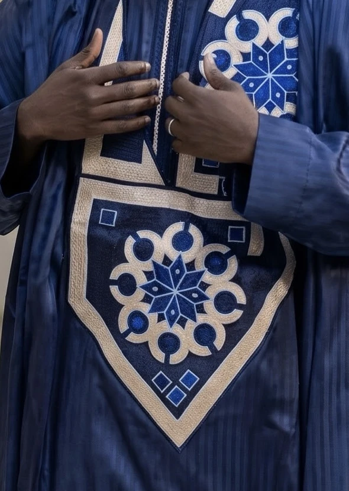

Maison de haute couture · Dakar · Collection MMXXVI
Korité · Tabaski · Mariages
Quand c’est élégant, c’est Saadikh.
Grands boubous, deux pièces et trois pièces pour homme, coupés amples et brodés fil à fil à Sicap Foire. En salon à Dakar, ou sur mesure jusque dans la diaspora.
- Fiche de coupe
- N° 006
- Tour de poitrine
- 112 cm
- Longueur dos
- 148 cm
- Carrure
- 46 cm
- Broderie du plastron
- 14 h, à la main


Macro ×4Plastron · rosace
La maison
Un vêtement d’apparat se reconnaît à trois choses : la noblesse du tissu, l’ampleur de la coupe, la finesse de ce qui est cousu.
STAM by Fall habille les hommes de Dakar pour les jours qui comptent. Chaque pièce est coupée à la mesure de celui qui la portera.
Traditionnellement vôtre.
La Collection
Neuf pièces, accrochées comme sur le portant de l’atelier. Les trois pièces se portent avec pantalon ou thiaya ; les deux pièces, du vendredi à tous les jours.
Prix indicatifs en F CFA · confirmés par la maison sur WhatsApp
De la coupe
à la broderie


Sur-mesure · sur rendez-vous
Dakar · Paris · New York
La Maison Saadikh
Conciergerie
Privée
a l’honneur de vous recevoir pour la création de votre tenue sur mesure.
Un conseiller vous accompagne en personne, du choix du tissu jusqu’à la livraison. Un mètre ruban suffit : il vous guide pour chaque mesure.
Votre demande est prête
Ou écrivez directement au +221 78 895 25 55
- IUne conversation
- IIVos mesures, à distance
- IIIVotre pièce, confectionnée
- IVLivrée jusqu’à vous
- Tissu
- Couleur
- Prix indicatif
Taille
La commande part rédigée. La maison confirme disponibilité, livraison et paiement.